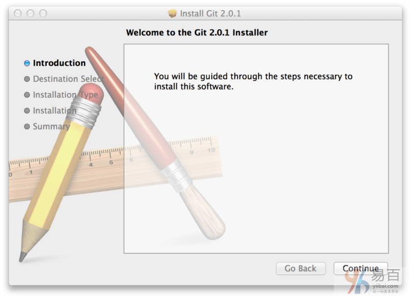
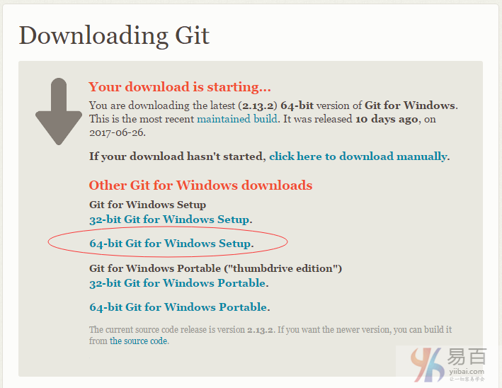

在你开始使用 Git 前，需要将它安装在你的计算机上。 即便已经安装，最好将它升级到最新的版本。 你可以通过软件包或者其它安装程序来安装，或者下载源码编译安装。
注意： 写本文作时使用的 Git 版本为 2.0.0。 我们使用的大部分命令仍然可以在很古老的 Git 版本上使用，但也有少部分命令不好用或者在旧版本中的行为有差异。 因为 Git 在保持向后兼容方面表现很好，本书使用的这些命令在 2.0 之后的版本应该有效。
在 Linux 上安装
如果你想在 Linux 上用二进制安装程序来安装 Git，可以使用发行版包含的基础软件包管理工具来安装。 如果以 Fedora 上为例，你可以使用 yum：
$ sudo yum install git
如果你在基于 Debian 的发行版上，请尝试用 apt-get：
$ sudo apt-get install git
要了解更多选择，Git 官方网站上有在各种 Unix 风格的系统上安装步骤，网址为 http://git-scm.com/download/linux 。
安装完成后，查看当前安装的 Git 的版本 -
yiibai@ubuntu:~$ git version 2.7.4
git version 2.7.4
在 Mac 上安装
在 Mac 上安装 Git 有多种方式。 最简单的方法是安装 Xcode Command Line Tools。 Mavericks (10.9) 或更高版本的系统中，在 Terminal 里尝试首次运行 git 命令即可。 如果没有安装过命令行开发者工具，将会提示你安装。
如果你想安装更新的版本，可以使用二进制安装程序。 官方维护的 OSX Git 安装程序可以在 Git 官方网站下载，网址为 http://git-scm.com/download/mac。

图示7. Git OS X 安装程序.
你也可以将它作为 GitHub for Mac 的一部分来安装。 它们的图形化 Git 工具有一个安装命令行工具的选项。 你可以从 GitHub for Mac 网站下载该工具，网址为 http://mac.github.com。
在 Windows 上安装
在 Windows 上安装 Git 也有几种安装方法。 官方版本可以在 Git 官方网站下载。 打开 http://git-scm.com/download/win ，下载会自动开始。 要注意这是一个名为 Git for Windows的项目(也叫做 msysGit)，和 Git 是分别独立的项目；更多信息请访问 http://msysgit.github.io/ 。
下面页面如下 -

另一个简单的方法是安装 GitHub for Windows。 该安装程序包含图形化和命令行版本的 Git。 它也能支持 Powershell，提供了稳定的凭证缓存和健全的 CRLF 设置。 稍后我们会对这方面有更多了解，现在只要一句话就够了，这些都是你所需要的。 你可以在 GitHub for Windows 网站下载，网址为 http://windows.github.com 。
从源代码安装
有人觉得从源码安装 Git 更实用，因为你能得到最新的版本。 二进制安装程序倾向于有一些滞后，当然近几年 Git 已经成熟，这个差异不再显著。
注意：从源码安装 Git 依懒包会比较，可能比较费时。
如果你想从源码安装 Git，需要安装 Git 依赖的库：curl、zlib、openssl、expat，还有libiconv。 如果你的系统上有 yum (如 Fedora)或者 apt-get(如基于 Debian 的系统)，可以使用以下命令之一来安装最小化的依赖包来编译和安装 Git 的二进制版：
$ sudo yum install curl-devel expat-devel gettext-devel
openssl-devel zlib-devel
$ sudo apt-get install libcurl4-gnutls-dev libexpat1-dev gettext
libz-dev libssl-dev
为了能够添加更多格式的文档(如 doc, html, info)，你需要安装以下的依赖包：
$ sudo yum install asciidoc xmlto docbook2x
$ sudo apt-get install asciidoc xmlto docbook2x
当你安装好所有的必要依赖，你可以继续从几个地方来取得最新发布版本的 tar 包。 你可以从 Kernel.org 网站获取，网址为 http://www.kernel.org/pub/software/scm/git，或从 GitHub 网站上的镜像来获得，网址为 http://github.com/git/git/releases。 通常在 GitHub 上的是最新版本，但 kernel.org 上包含有文件下载签名，如果你想验证下载正确性的话会用到。
接着，编译并安装：
$ tar -zxf git-2.0.0.tar.gz
$ cd git-2.0.0
$ make configure
$ ./configure --prefix=/usr
$ make all doc info
$ sudo make install install-doc install-html install-info
完成后，你可以使用 Git 来获取 Git 的升级：
$ git clone git://git.kernel.org/pub/scm/git/git.git
易百教程移动端：请扫描本页面底部(右侧)二维码并关注微信公众号，回复："教程" 选择相关教程阅读或直接访问：http://m.yiibai.com 。
加QQ群啦，易百教程官方技术学习群
注意：建议每个人选自己的技术方向加群，同一个QQ最多限加 3 个群。
- Java技术群： 227270512 （人数：3000，免费：否）
- Go开发者群（新）： 851549018 （人数：1000，免费）
- PHP开发者群： 460153241 （人数：2000，免费）
- MySQL/SQL群： 418407075 （人数：2000，免费：否）
- 大数据开发群： 655154550 （人数：2000，免费：否）
- Python技术群： 287904175 （人数：2000，免费：否）
- 人工智能深度学习： 456236082 （人数：2000，免费：否）
- 测试工程师群： 415553199 （人数：2000，免费：否）
- 前端开发者群： 410430016 （人数：2000，免费：否）
- C/C++技术群(新)： 629264796 （人数：2000，免费）
- Node.js技术群(新)： 621549808 （人数：2000，免费）
- PostgreSQL数据库群： 539504187 （人数：1000，免费）
- Linux运维技术群： 479429477 （人数：2000，免费：否）
- Oracle数据库： 175248146 （人数：2000，免费：否）
- C#/ASP.Net开发者： 579821706 （人数：2000，免费）
- 数据分析师群： 397883996 （人数：2000，免费：否）